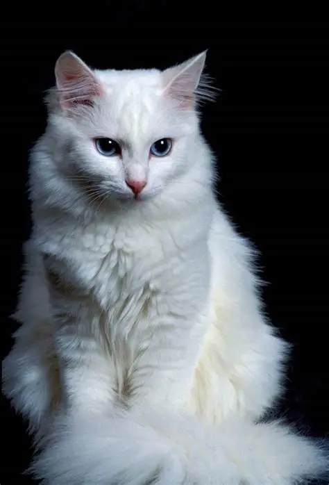
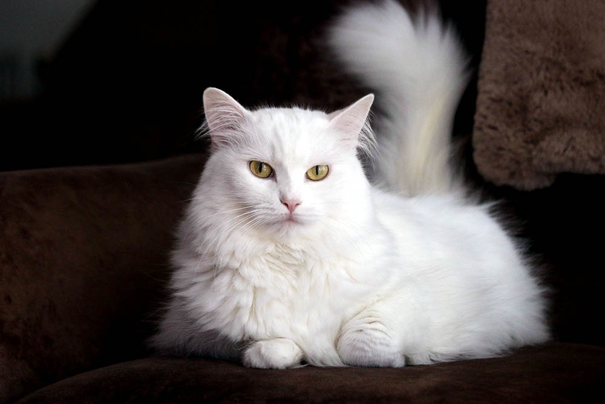
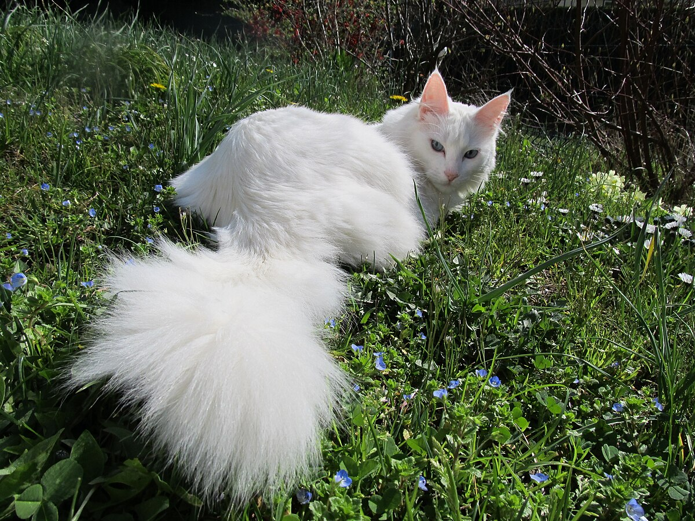
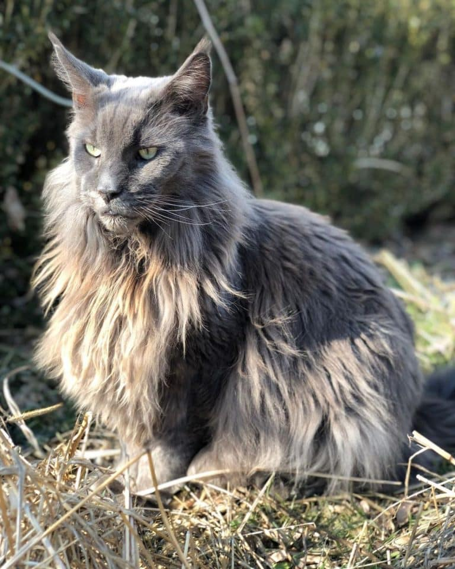
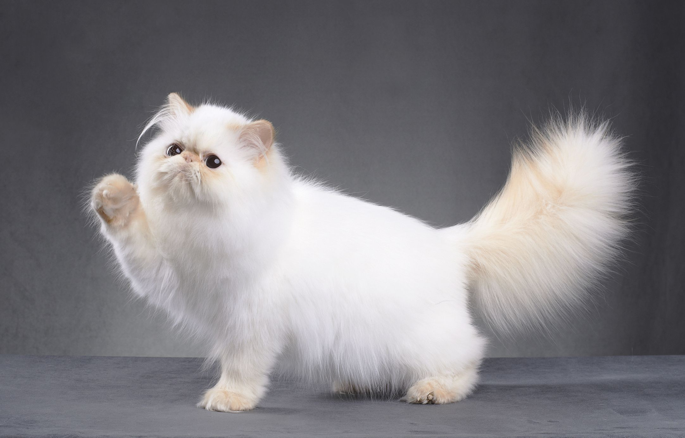
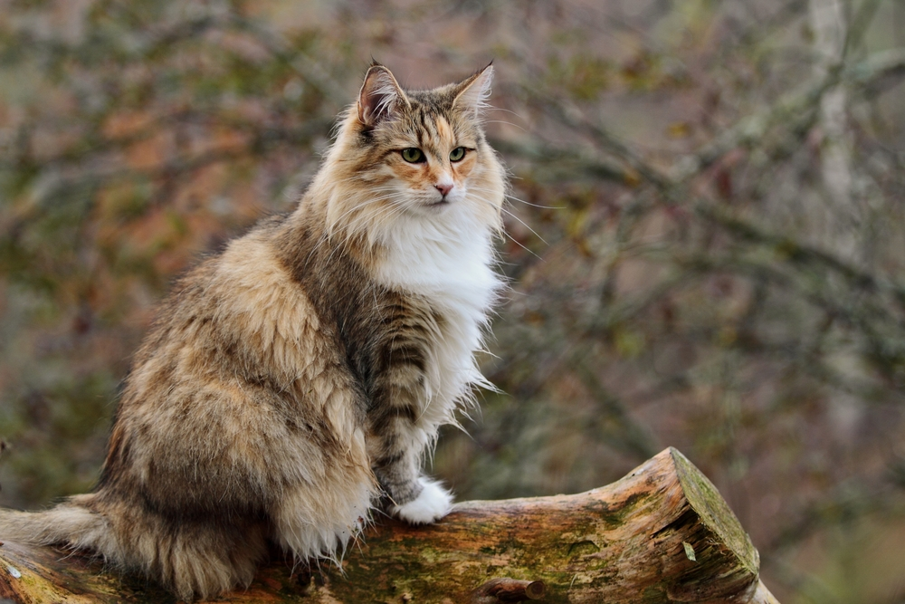

Welcome to the World of Cats😸
Welcome! In this site, we will explore the fascinating world of cats by getting to know some of the most popular and beloved cat breeds, their unique characteristics, and charming personalities.
-
Turkish Angora
Turkish Angoras are elegant, playful cats known for their silky coats and affectionate personalities, originating from Turkey and recognized for their intelligence and social nature.
   -
Maine Coon
The Maine Coon is a large, friendly cat breed known for its distinctive appearance, playful personality, and gentle nature.
 -
Persian
Persian cats are known for their luxurious long fur, distinctive flat faces, and gentle personalities, making them one of the most popular cat breeds worldwide.
 -
Norwegian Forest Cat
The Norwegian Forest Cat is a large, robust breed known for its stunning appearance, friendly personality, and adaptability to cold climates.
